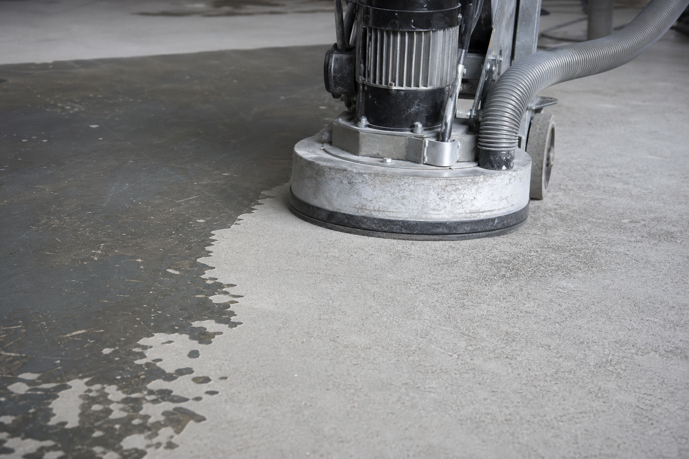
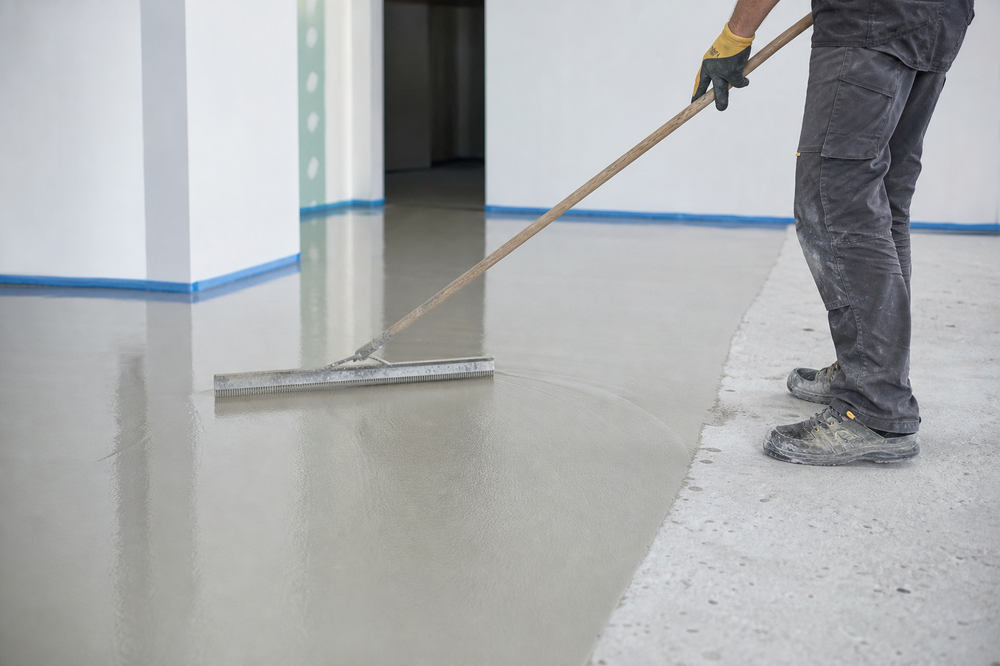

Coating removal
Glue, levelling compounds, paint, epoxy and old commercial floor coverings.
Auckland concrete floor preparation
The coating removal experts.
Who We Are
Commercial Concrete Grinding serves as a leading contractor in the Auckland area. We are a team of professionals who tackle everything from complex large projects to smaller scale jobs.
Fueled by our commitment to excellence, we go the extra mile to make sure clients are completely satisfied with our work. Call today to schedule a consultation.
Grinding and removal work planned around the floor condition, coating type and next finish.
Equipment and process choices suited to occupied or soon-to-open commercial spaces.
Talk directly with Nick about access, timing, floor condition and the result you need.
Our Services
Glue, levelling compounds, paint, epoxy and old commercial floor coverings.
Preparation and application support for smooth, level floor finishes.
Installation services for practical commercial vinyl flooring after the substrate is prepared.
Marmoleum installation for commercial spaces needing a clean, durable sheet or tile finish.
Resurfacing work for affected concrete pads before the next finish is applied.
End-of-tenancy warehouse floor grinding and sealing for a cleaner handover.
Concrete sealing options suited to practical commercial floor use.
Floor preparation steps for sites where moisture needs to be addressed before finishing.
Work

Looking for a reliable contractor with extensive experience for your next project? Commercial Concrete Grinding stands by the excellence of its work and provides clients with personalised attention based on their specific needs.
Request a consultation
Our clients are the number one priority. With floor levelling, commercial vinyl installation and Marmoleum installation services, Commercial Concrete Grinding is prepared to tackle complex projects and stand by the quality of the work.
Talk about your floorContact